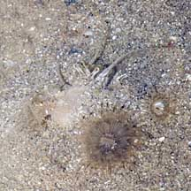
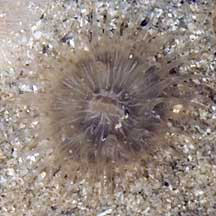
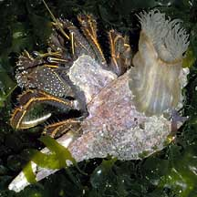
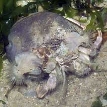

|
|
| sea anemones text index | photo index |
| Phylum Cnidaria > Class Anthozoa > Subclass Zoantharia/Hexacorallia > Order Actiniaria |
| Small
hermit-hitching anemone awaiting identification* updated Nov 2019 Where seen? This small anemone is sometimes seen on shells occupied by hermit crabs on our Northern shores. Features: Diameter with tentacles extended 1-2cm. Many short tapering tentacles, semi-transparent some with pale brown bands. Body column short, smooth and not covered in sediments, pale some with faint stripes. Oral disk white or with white radiating stripes. Sometimes, a single single shell may bear two or three of these anemones. Big anemones are also seen on shells occupied by hermit crabs. While other anemones hitch a ride on the shell of living snails. |
 With a sea anemone on its shell. Changi, Apr 04 |
 Hermit half buried, with its sea anemones. Changi, Apr 07 |
 |
*Species are difficult to positively identify without close examination.
On this website, they are grouped by external features for convenience of display
| Small hermit-hitching anemones on Singapore shores |
On wildsingapore
flickr
|
| Other sightings on Singapore shores |
 Changi, Jun 07 |
 Changi, Jul 07 |